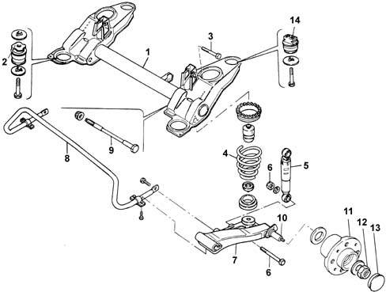

Introduction - REAR SUSPENSION
- Path
- Descriptions > 44 SUSPENSION AND WHEELS > 4420 REAR SUSPENSION > Introduction - REAR SUSPENSION
- Kind
- system description
- Applies to
- all engines; all production periods
- Interactive page
- https://sloeber94.github.io/elrnDB-fMltpl/en/#/2892445
Applies to: all engines; all production periods
The rear suspension is indepedent with suspension arms anchored o an auxiliary crossmember fixed to the bodyshell.
The main elements of the rear suspension are:
- variable flexibility coil springs. The springs rest on shims with rubber seals for preventing operating noise
- pressurized double acting hydraulic (gas) shock absorbers
- "cellasto" end of travel buffer with gradual intervention to improve comfort and gradual nature of response round bends
- track control arms hinged to the rear crossmember by means of two roller bearings
- anti-roll bar connected to track control arms.

1, Rigid rear axle 2, Rubber buffer (hydraulic) 3, Upper shock absorber fixing bolt 4, Coil spring 5, Shock absorber 6, Shock absorber to track control arm lower fixings 7, Track control arm 8, Anti-roll bar 9, Track control arm to rear axle fixings 10, Stub axle 11, Wheel hub 12, Wheel hub fixing nut 13, Wheel hub cover 14, Buffers